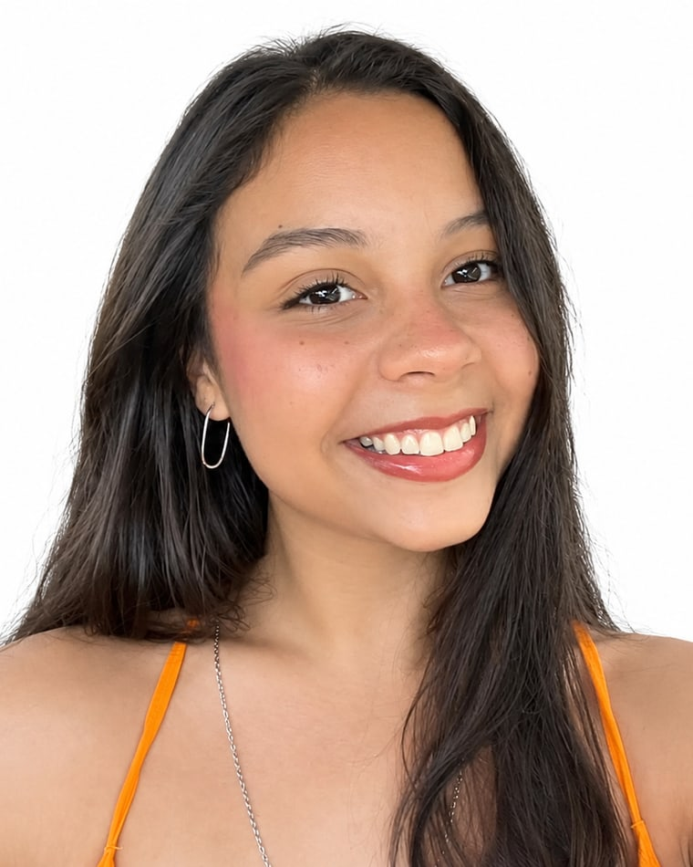

Professora de francês
A gente aprende junto.
E isso não é frase bonita: eu ainda estou estudando francês. Por isso eu lembro exatamente onde trava — e sei como sair de lá.
Aula por vídeo chamada, cara a cara comigo. No seu ritmo, sem medo de errar na frente de ninguém.

Professora de francês
A gente aprende junto.
E isso não é frase bonita: eu ainda estou estudando francês. Por isso eu lembro exatamente onde trava — e sei como sair de lá.

Quem sou eu
Oi! Eu também ainda estou aprendendo
Eu sou a Gio, tenho [idade] anos e moro em [cidade]. Eu não sou aquela professora que cresceu falando francês em casa. Eu comecei do zero, como você, e ainda estou me formando em [curso/faculdade].
Pode parecer estranho escolher uma professora que ainda estuda. Eu acho que é o contrário: é justamente por isso que eu lembro de cada parte difícil. O subjonctif que não entra na cabeça, a palavra que some na hora de falar, a vergonha de errar a pronúncia. Eu passei por tudo isso [há pouco tempo / ano passado] — e ainda passo.
Hoje eu dou aula há [X] anos, e o que eu mais ouço dos alunos é: "com você eu não tenho medo de falar errado". É exatamente essa a ideia.
Eu não sou a pessoa que já chegou. Eu sou a que está no caminho com você — só uns passos à frente.
Foto 2 — a Gio dando aula,
estudando ou em viagem.
Falta enviar.
Experiência com o francês
[Anos estudando francês, nível atual (ex.: B2/C1), experiências de imersão, intercâmbio, viagens, contato diário com o idioma.]
Como tudo começou
Minha história com o francês
Spoiler: começou torto, como a de todo mundo.
[ano] — o começo
[Como você começou a estudar francês: o que te levou até o idioma — uma música, um filme, a escola, uma viagem, alguém da família.]
[ano] — a trajetória
[Como foi o caminho: onde estudou, o que travou, quanto tempo levou, o momento em que destravou.]
[ano] — a formação
[Cursos, faculdade, certificações, intercâmbio, professores que fizeram diferença.]
[ano] — a primeira aula
[Como você começou a dar aulas: foi por acaso? Alguém pediu ajuda? Como foi a primeira aula?]
hoje
[Sua relação atual com o idioma: o que ainda estuda, o que ainda acha difícil, o que mais gosta.]
e ainda estudando!
Até aqui
Experiência em números
anos dando aula
alunos já atendidos
aulas dadas
alunos agora
e tem vaga pra você
Números aproximados e reais — nada de inflar. Me manda os seus que eu preencho.
Na prática
Como funcionam as aulas
A gente abre a vídeo chamada e conversa. Eu te vejo, você me vê, e a gramática entra no meio da conversa — sem apostila decorada e sem aquele silêncio constrangedor.
GioBonjour! Comment ça va?
vocêÇa va! …eu acho?
Resposta perfeita. Até eu fico em dúvida às vezes, viu?
posso falar errado mesmo?
Pode e deve. C'est comme ça qu'on apprend!
Bora começar pelo que você quer dizer hoje.
Você fala desde a primeira aula
Nada de esperar "estar pronto". A gente começa falando com o que você já tem, por menos que pareça.
O conteúdo sai de você
Eu anoto o que você quer dizer e não conseguiu. A próxima aula nasce dali — não de um capítulo qualquer.
Acompanhamento entre as aulas
[Como funciona o acompanhamento: material enviado, correções, áudios, grupo, tira-dúvidas no WhatsApp?]
Frequência e duração
[Quantas vezes por semana, quanto tempo cada aula, se dá pra mudar de horário, como funciona remarcação.]
Erro que eu também já cometi
Dizer je suis 25 ans em vez de j'ai 25 ans. Em francês a idade a gente tem, não é. Eu errei isso por meses.
Serve pra você?
Para quem são as aulas
Você está começando do zero
Nunca estudou francês e acha que é tarde, difícil ou "não é pra você". Não é nada disso — é só um começo diferente do que te venderam.
- Nunca abriu um livro de francês
- Tentou app sozinho e desistiu
- Tem medo de não ter "dom pra idioma"
Você já estuda e travou
Entende quando lê, entende quando ouve, mas na hora de falar some tudo. Esse é o travamento mais comum que existe — e ele tem saída.
- Lê bem, mas congela pra falar
- Estudou em curso e parou no meio
- Precisa destravar pra prova, trabalho ou viagem

Níveis e objetivos que eu atendo
- A1 — do zero
- A2 — básico
- B1 — me viro
- B2+ [confirmar até qual nível]
- Conversação
- Viagem
- Trabalho
- [DELF / DALF?]
- [Intercâmbio / cidadania?]
Do seu jeito
Modalidades de aula
Duas formas de estudar comigo — as duas por vídeo chamada, cara a cara. A gente escolhe junto na primeira conversa.
Aula individual
Só você e eu. O ritmo, o assunto e o horário são seus.
- Plano montado pro seu objetivo
- Você fala a aula inteira
- [terceiro benefício]
Aula em grupo
Turma pequena, mais barato e com gente pra conversar junto.
- [quantas pessoas por turma]
- Conversa com outros alunos
- [terceiro benefício]
sem compromisso, prometo
Antes de decidir, a gente conversa
[Existe aula experimental? É gratuita ou paga? Quanto dura? O que acontece nela? Se não existir, trocamos este bloco por uma conversa de 15 min pelo WhatsApp.]
Por que comigo
O que muda nas minhas aulas
Eu ainda sou aluna
Meu maior diferencial é justamente esse. Eu não esqueci como é não entender — porque ainda acontece comigo.
Errar é o combinado
Ninguém é corrigido no meio da frase. Eu anoto, você termina a ideia, e a gente volta depois — rindo.
Aula feita pra você
Não existe turma padrão na individual. O plano muda conforme o que você precisa dizer na vida real.
Experiência profissional
[Escolas, cursos de idioma, empresas, aulas particulares — onde já deu aula e por quanto tempo.]
olha isso!
Nenhuma aula minha tem julgamento
Você pode falar errado, esquecer palavra, misturar com inglês e dar risada no meio. Isso não atrapalha a aula — isso é a aula.
Quem já destravou
O que os alunos contam
Só depoimento real e autorizado entra aqui.
[Depoimento real do aluno — até 40 palavras, com as palavras dele mesmo.]
[Depoimento de destaque — o mais forte dos três.]
[Depoimento em formato de balão — bom pra uma frase curta e marcante.]
Prints das mensagens
Se tiver conversa de aluno autorizada, ela entra aqui como imagem — é o que mais convence.
Print 1
falta enviar
Print 2
falta enviar
Print 3
falta enviar
Lembrete: peça autorização por escrito antes de publicar print, nome ou foto de aluno.
No papel
Formação e qualificações
Eu estou em formação — e faço questão de dizer isso na cara limpa.
- [Faculdade — curso, instituição, período, se está em andamento]
- [Formação acadêmica complementar]
- [Certificações — DELF, DALF, TCF, TEF: qual e qual nota]
- [Nível de proficiência atual]
- [Cursos livres realizados]
- [Experiência em escolas ou cursos de idiomas]
- [Outras qualificações relevantes]
Sobre ainda estar me formando
Eu podia esconder isso. Prefiro não. Estar em formação significa que eu estudo todo dia, que eu uso os mesmos métodos que passo pra você, e que eu testo tudo em mim antes de levar pra aula.
Antes de me chamar
Dúvidas que sempre aparecem
Preciso saber francês para começar?
Não precisa de nada. Dá pra começar sem saber dizer bonjour — e na primeira aula você já vai falar alguma coisa. A aula inteira é pensada pra quem está começando do zero também.
As aulas são online?
Todas. A aula acontece por vídeo chamada, ao vivo, eu e você cara a cara — não é aula gravada nem material pra você ver sozinho. De qualquer lugar, só precisa de internet e de vontade de falar.
[Por qual plataforma: Google Meet, Zoom, outra?]
As aulas são individuais?
Tem das duas: individual, só você e eu, e em grupo, numa turma pequena. As duas por vídeo chamada.
[Diferença de preço e quantas pessoas cabem na turma.]
Quanto tempo dura cada aula?
[Duração em minutos e quantas vezes por semana.]
Qual nível de francês posso estudar?
[Do A1 até qual nível? Ser honesta aqui: se o limite é B1 ou B2, dizer.]
Existe aula experimental?
[Existe? É grátis? Quanto dura? O que acontece nela?]
Como funciona o pagamento?
[Avulsa ou pacote? Pix, cartão, transferência? Quando se paga — antes ou depois? Tem desconto por pacote?]
Como faço para começar?
Me manda uma mensagem no WhatsApp contando por que você quer aprender francês. A gente conversa, vê qual formato encaixa no seu horário e marca a primeira aula. Sem formulário gigante e sem compromisso.
sem pressão, prometo
Bora destravar esse francês?
Me conta em uma mensagem por que você quer aprender francês — viagem, trabalho, uma série, uma pessoa, vale tudo. Eu respondo e a gente combina o resto sem burocracia.
[E-mail ou Instagram, se quiser mostrar outro canal.]